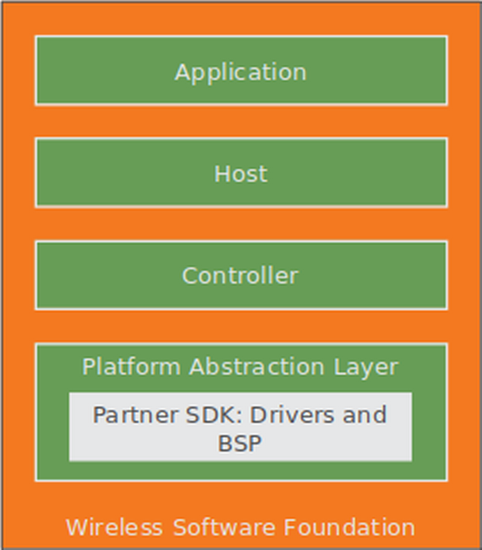
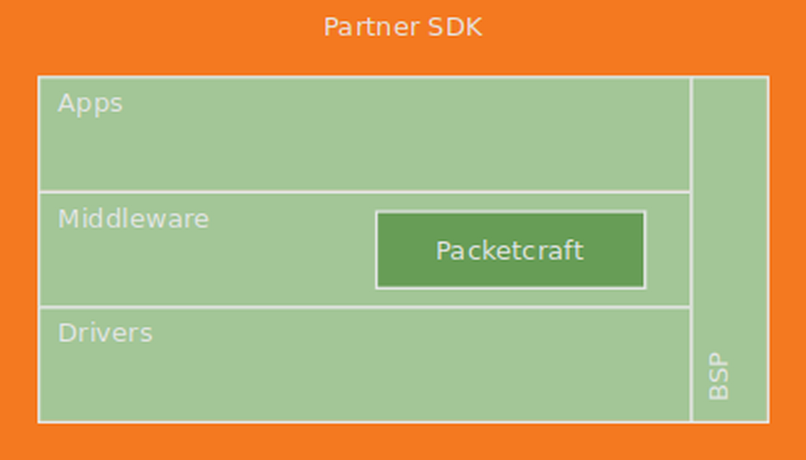

Platform Developer’s Guide
Introduction
This document is the Developer’s Guide for the em | bleu Platform Abstraction Layer (PAL) software.
Audience
This book is written for experienced software engineers who might or might not have experience with em | bleu products. Such engineers typically have experience writing Bluetooth applications but might have limited experience with em | bleu software. The reader is assumed to have embedded C software experience.
Abbreviations
Definitions of abbreviations used in this document are listed below:
BB: Baseband
BLE: Bluetooth Low Energy
ISR: Interrupt Service Routine
LED: Light Emitting Diode
LL: Link Layer
LTK: Long Term Key
PAL: Paltform Abstraction Layer
SoC: System on Chip
SPI: Serial Peripheral Interface
TWI: Two Wire Interface
UART: Universal Asynchronous Receiver/Transmitter
WSF: Wireless Software Foundation
System Context
PAL consists of one or more platform dependent drivers. These drivers implement required functionality of platform independent protocol software systems such as the following:
em | bleu Host
em | bleu Controller
Not all drivers needs implementation in order to achieve a functional em | bleu system. Only dependent routines called by the protocol components requires implementation.
PAL is dependent on the underlying hardware platform’s BSP.
System Configuration
Two possible PAL configurations are possible.
em | bleu stand-alone builds its own sample applications and includes PAL for specific targets for various vendor platforms.
{kind=link}
Figure 2-1. Stand Alone Configuration.
PAL allows em | bleu software integration into a silicon vendor’s SDK. PAL is implemented as glue logic to the silicon vendor’s drivers.
{kind=link}
Figure 2-2. Silicon Vendor SDK Configuration.
Architecture
This section describes the software architecture concepts used by PAL.
Drivers
PAL is separated into individual drivers typically implementing either:
peripheral in a SoC (e.g. TWI, UART, etc.)
components on board (e.g. LED, buttons, etc.)
devices/IC on board (e.g. audio amplifier, I/O expander, etc.)
Asynchronous
Asynchronous operations use completion callbacks. Callbacks are typically called in the ISR context. Client callback routines are expected to return immediately without blocking.
Non-Blocking
PAL clients expect drivers to return immediately with minimal delay. Driver implementations do not busy wait for an operation to complete. Rather, a callback is used to signal the completion of operations.
State
Some drivers externally expose state. The state can be used to optionally poll for current operational behavior. State is not needed for valid functional operation by the client. However, polling the driver state can be used for debugging and testing.
Always Succeeds
Clients expect operations to always succeed and always complete. This allows clients to simplify error handling code paths.
For example, setting LED always succeeds without error. Another example, UART write should not fail and its operation always completes.
A few exceptions exists. For example, the BB driver may fail an operation and inform the client of the failure.
Multiple Instances
Some peripherals (e.g. UART) may have multiple instantiations in an SoC. Clients will initialize each required instance. An instance ID returned at initialization of the resource is used to distinguish operations between peripheral instances.
Folder Organization
The contents of the platform component folder the table below:
Directory |
Description |
|---|---|
docs |
Documentation |
external |
External IC devices (i.e. on board or extender board) |
include |
Public PAL API |
targets |
Platform target sources |
test |
Unit tests |
Porting
Each application project vary on driver requirements. To determine application requirements, simply compile the application without PAL implementation. Examine the linker errors to determine which drivers are required for the application.